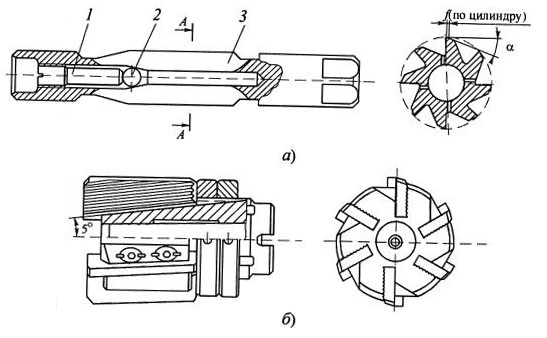
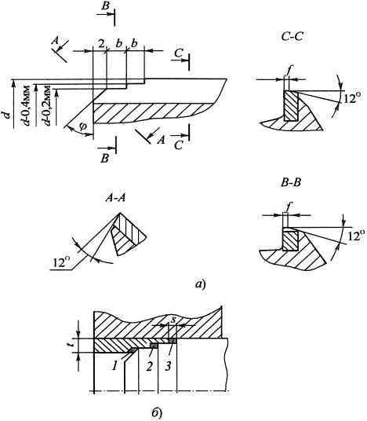
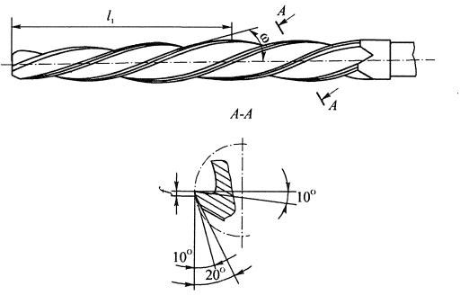
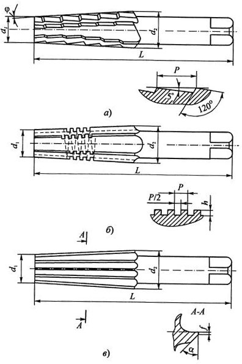
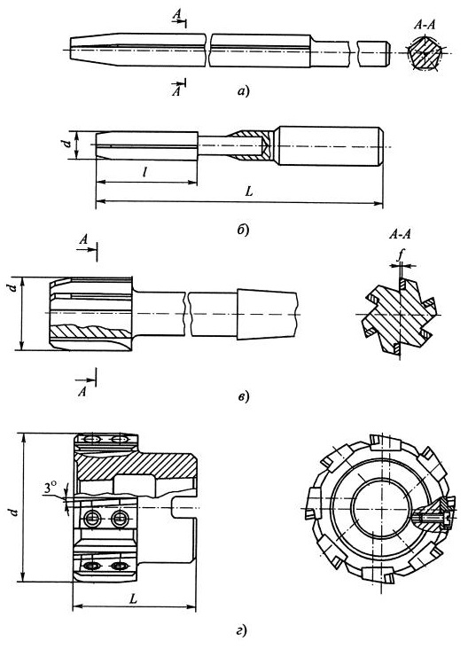
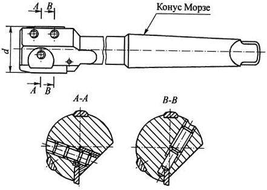

Ручные развертки, регулируемые по диаметру. Регулируемые по диаметру развертки нашли широкое применение в ремонтном производстве. Одна из конструкций такой развертки приведена на рисунке ниже позиция (а).
В корпусе 3 развертки, изготовленном из стали 9ХС, имеется отверстие, состоящее из конической и цилиндрической частей, в которое помещается шарик 2, передвигаемый регулировочным винтом 1 вдоль оси. Между зубьями по впадине сделаны продольные прорези. По мере перемещения шарика винтом за счет упругих деформаций стенок развертки увеличивается диаметр калибрующей части развертки. Величина D регулирования диаметра небольшая и берется в зависимости от диаметра развертки, например:
Машинные развертки, изготавливаемые насадными сборными (б), можно регулировать по диаметру за счет перестановки ножей по рифлениям. Более тонкую регулировку можно осуществить путем перемещения ножей с рифлениями вдоль пазов, наклоненных под углом 5° к оси развертки. У таких инструментов ножи упираются торцами в регулировочную гайку с контргайкой, а их закрепление осуществляется специальными эксцентриковыми кулачками, боковые стороны которых прошлифованы по архимедовой спирали.
Есть и другие конструкции сборных разверток. При их эксплуатации следует иметь в виду, что после каждой регулировки необходимы шлифовка и доводка развертки по диаметру, так как из-за жестких требований к точности разверток ее невозможно обеспечить только регулировкой.
Развертки с кольцевой заточкой нашли широкое применение в тяжелом машиностроении благодаря высокой производительности и надежности в работе.
Режущая часть таких разверток (а) не имеет заборного конуса, а состоит из трех участков. В начале находится направляющий конус длиной до 2 мм с углом φ = 45° и зубьями, заточенными с задним углом, равным α = 12°, снимающими припуск, как зенкер. Затем следуют второй и третий участки, выполненные в виде кольцевых поясков шириной b = 2...4 мм (в зависимости от размера развертки) и диаметром на 0,2...0,4 мм меньшим, чем диаметр калибрующей части. Главные режущие кромки, снимающие припуск, расположены на торцах уступов под углом φ = 90° к оси и имеют нулевой задний угол. Калибрующая часть - цилиндрическая, шлифуется по направляющим ленточкам шириной f без обратного конуса за одну установку. Число зубьев уменьшено, за счет чего увеличен объем стружечных канавок. В этом случае ориентировочно с последующим округлением до ближайшего четного числа. Расположение зубьев по окружности равномерное. Стружечные канавки прямые, но для обработки прерывистых поверхностей применяют винтовые канавки с направлением, обратным вращению развертки. z = 1,5 · d ½ с последующим округлением до ближайшего четного числа. Расположение зубьев по окружности равномерное. Стружечные канавки прямые, но для обработки прерывистых поверхностей применяют винтовые канавки с направлением, обратным вращению развертки.
Благодаря тому, что главные режущие кромки расположены перпендикулярно к оси развертки (б), радиальная составляющая силы резания очень мала, а широкие кольцевые ленточки обеспечивают лучшее направление развертки в отверстии. При этом точность по диаметру при обработке стали составляет JT8, шероховатость поверхности - Ra 1,25...0,63, а производительность по сравнению с обычными развертками выше на 50 %. Благодаря простоте переточки по конусу и ленточкам такие развертки имеют большую стойкость, допуская от 10 до 20 переточек.
Крепление разверток в шпинделе станка жесткое, а биение и несоосность развертки с обрабатываемым отверстием должны быть не более 0,1 мм.
Развертки такой конструкции позволяют увеличить припуск под развертывание до 1 мм на сторону, причем их можно применять сразу после сверления, исключая операцию зенкерования.
Котельные развертки применяют при подготовке отверстий под заклепки в двух или более соединяемых листах. Они получили широкое распространение в котло-, корабле- и авиастроении, а также при изготовлении мостовых конструкций.
Котельные развертки работают в тяжелых условиях, так как из-за неизбежных несовпадений осей отверстий в пакетах листов приходится удалять большой припуск - до 1...2 мм на сторону, т.е. почти как при зенкеровании. При этом обрабатываемые материалы, как правило, вязкие и пластичные.
Для лучшего направления разверток в отверстии, снижения осевых усилий и уменьшения шероховатости поверхности используются винтовые зубья с углом ω = 25...30° с направлением, обратным вращению инструмента. Котельные развертки имеют малый угол заборного конуса, равный 2φ = 3...5°30' и, соответственно, большую длину режущей части, равную 1/3...1/2 длины рабочей части инструмента. Число зубьев z = 4...6 при диаметре разверток d = 6...40 мм. Передний угол зубьев в сечении, перпендикулярном к винтовым канавкам, γ = 12...15°, задний угол α = 10°. Зубья на калибрующей части имеют узкие направляющие ленточки шириной f = 0,2...0,3 мм с обратной конусностью 0,05...0,07 мм на 100 мм длины.
Котельные развертки изготавливают как ручные с цилиндрическим хвостовиком, так и машинные с коническим хвостовиком, устанавливаемые на радиально-сверлильных станках или на пневматических дрелях.
Конические развертки применяют для получения точных конических отверстий под штифты (конусность 1:50), конусы Морзе и метрические, посадочные отверстия насадных зенкеров и разверток (конусность 1:30) и др. Конические отверстия формируют либо из цилиндрических, полученных сверлением, либо из конических отверстий, полученных расточкой при обработке очень крутых конусов, например с конусностью 7:24.
Условия работы таких разверток очень тяжелые, так как у них длина режущих кромок, снимающих припуск, большая и равна длине образующей конуса, а толщина срезаемого слоя определяется перепадом диаметров.
Требования к точности конических отверстий достаточно высоки, так как от нее часто зависят прочность и герметичность соединяемых деталей, величина передаваемого крутящего момента и др. При этом точность обработанных отверстий обеспечивается точностью изготовления разверток.
В отличие от цилиндрических, у конических разверток отсутствует разделение на режущую и калибрующую части, так как зубья, расположенные на конической поверхности, являются одновременно и режущими, и калибрующими.
При обработке отверстий с конусностью большей 1:20 приходам снимать припуск такой большой величины, что его можно удалить только с помощью комплекта разверток.
На рисунке ниже приведен комплект конических разверток из трех номеров, применяемый для обработки отверстий под конус Морзе.
Развертка № 1 (а) - черновая, имеет ступенчатую форму зубьев, расположенных по винтовой поверхности, которая совпадает по направлению с направлением вращения инструмента. Припуск снимается режущими кромками, расположенными на торцах зубьев, как при зенкеровании. После прохода такой развертки цилиндрическое отверстие превращается в ступенчатое. У развертки № 1 стружечные канавки прямые, а их число равно 4...8 и зависит от диаметра конуса.
Развертка № 2 (б) - промежуточная, имеет форму обрабатываемого отверстия. Ее режущие кромки делятся на отдельные мелкие участки прямоугольной резьбой, имеющей направление, обратное вращению инструмента. Шаг резьбы Р = 1,5...3,0 мм, ширина канавок Р/2, а глубина h - 0,2Р. Эта развертка обеспечивает дробление снимаемого припуска на более мелкие ступени.
Развертка № 3 (в) - чистовая, имеет прямые зубья по всей длине режущей части, а для более устойчивого положения развертки в отверстии на вершинах ее зубьев делаются ленточки шириной 0,05 мм. Эта развертка обеспечивает срезание остаточной части припуска и калибрует отверстие.
У конических разверток стружечные канавки прямые, передний угол на режущих кромках g = 0°, задние поверхности зубьев у разверток № 1 затылованы, а у разверток № 2 и 3 заточены под углом a = 5°.
При обработке отверстий под штифты с конусностью 1:50 достаточно одной чистовой развертки, а с конусностью 1:30 необходимо использовать две развертки.
Развертки твердосплавные. Условия резания при развертывании благоприятны для применения твердых сплавов, так как для этих инструментов характерны малые нагрузки на режущие зубья, устойчивое положение в отверстии и высокая жесткость.
Применение твердых сплавов благодаря их высокой износостойкости в несколько раз повышает стойкость разверток, особенно при обработке отверстий в труднообрабатываемых сталях и высокопрочных чугунах. Однако реализовать возможность повышения скорости резания в несколько раз при использовании твердосплавных разверток не удается из-за возникновения вибраций, ухудшающих качество обработанной поверхности. Только в конструкциях разверток одностороннего резания с использованием внутреннего напорного охлаждения и с работой хвостовика на растяжение удалось при обработке конструкционных сталей достичь скоростей резания v = 120 м/мин.
Использование
твердых сплавов
при оснащении обычных машинных разверток возможно в трех вариантах:
- изготовление рабочей части целиком из твердых сплавов, полученных методом прессования или из
пластифицированных заготовок с последующим их спеканием;
- пайка стандартных пластин непосредственно на корпус развертки или на ножи в сборных
развертках;
- механическое крепление пластин на корпусе развертки.
Развертки диаметром до 3 мм изготавливают целиком из твердого сплава в виде трех-, четырех- или пятигранника (а) с заборным конусом, без стружечных канавок с отрицательными передними углами на режущих кромках. В этом случае снимаемые припуски чрезвычайно малы, а процесс резания подобен шабрению.
На позиции (б) приведена конструкция развертки с цельной твердосплавной рабочей частью и стальным хвостовиком, соединенным пайкой. Такие развертки изготавливают диаметрами 3...12 мм.
На позиции (в) показана концевая развертка с твердосплавными пластинками, напаянными на корпус, а на позиции (г) - насадная развертка с пластинами, напаянными на ножи, закрепленные винтами на корпусе инструмента. Такие развертки диаметрами 150...300 мм можно регулировать по диаметру с помощью подкладок под ножи.
Учитывая, что при развертывании температура резания невелика, в последнее время вместо пайки стали использовать высокопрочные клеи, что значительно упрощает процесс изготовления разверток и обеспечивает повышение стойкости твердосплавных пластин за счет отсутствия термических напряжений.
Развертки одностороннего резания изготавливают с одним или несколькими ножами и опорными пластинами.
Благодаря выглаживающему действию опорных твердосплавных направляющих, воспринимающих радиальную составляющую сил резания и трения, они обеспечивают высокую точность отверстий и низкую шероховатость их поверхностей. Такие развертки изготавливаются серийно в диапазоне диаметров 8...100 мм, и применяются для развертывания неглубоких отверстий. Режущие пластины у них могут быть регулируемыми по диаметру с использованием разных способов механического крепления. Один из вариантов таких разверток показан на рисунке ниже. За счет применения внутреннего напорного охлаждения СОЖ на масляной основе удалось достичь при обработке сталей следующих режимов резания: v = 70...90 мм, S = 0,1...0,5 мм/об, t = 0,15 мм.
Для лучшего направления разверток иногда впереди их рабочей части предусматривают направляющие цапфы, как у зенковок. У разверток больших диаметров с целью обеспечения надежного дробления стружки на зубьях заборного конуса в шахматном порядке наносят стружкоделительные канавки.